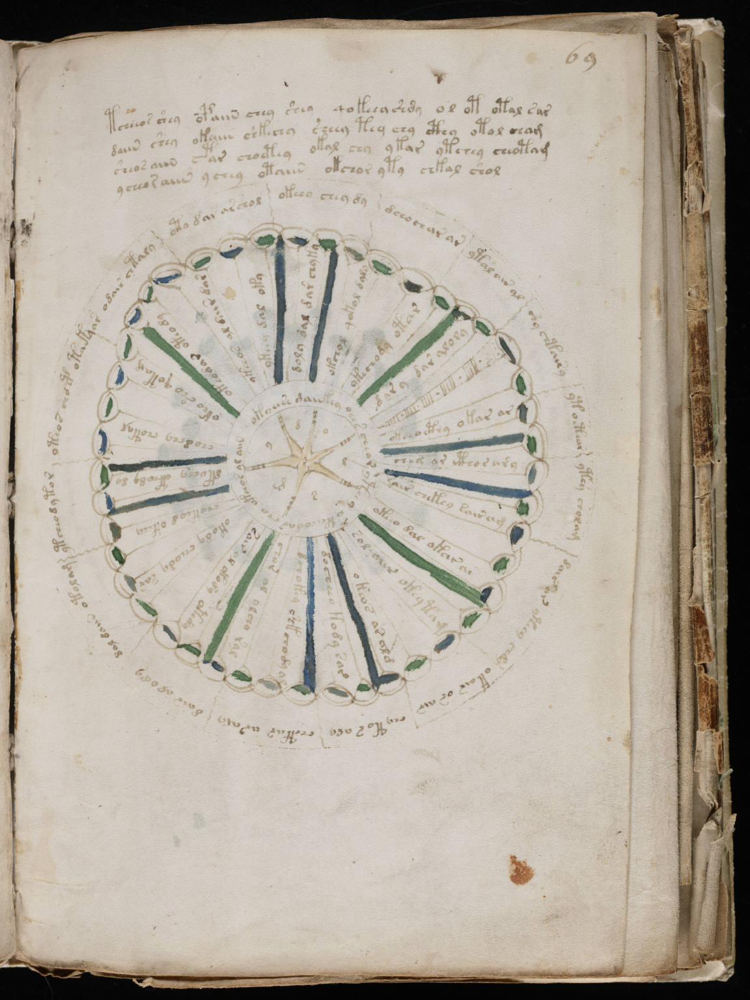

f69r
1tcheeos shey opaiin chey shey qokeeashdy ol ot otal sar2daiin shey okaiin shkechy sheey tey chy cthy otol cham3sheosaiin ctar choetey okal chy ykar ytchey cheotam4ycheo raiin ychey otaiin okchor yty chkal shol5shy chtairy6ytoetear7ytey cholam8dair ar yteey chdy9okair os air10chy to s aly11chetar ar aly12dalr al ody13dal daiin otolam14ytcheodytor15oteos chop otaky16ar odain chtaly17oto dar archol18okeeo chey dy19dchochar ar20ytal air al21okchocthy okar ar22cheg ar ithor ary23sair chekey dairam24okcho dal okar ar25sol aiir okeytam26okeos ar alg27docheeo kody sar28dchokey shkchody al29chor al ylcho ral30soir al okody otedy31okody cheody sar32chokeod okeea33dkochy cthody dy34chodchy chotal35okeo sho qotam36okeodar oteody37ykeeos al dair dar38ykeey dal oky39doly dal dar chyky40okchol qokol dalo41ykechody otar42dary dar aloly43okoeese dainkey ochs cheor yteey okcheo dar cho okchos al aiin44d45o46l47s48em49y
